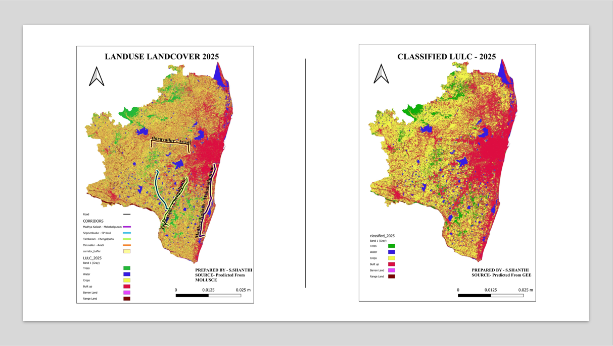
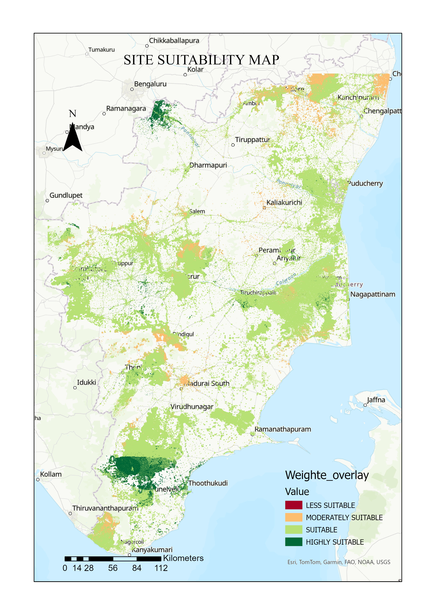

Academic Projects
Representative project summaries from my GIS and Remote Sensing work
Predictive Modelling of Land Cover Changes (Chennai Metropolitan Area)
Analysed multi-temporal satellite imagery to detect LULC changes along emerging urban corridors.
Performed classification, change detection and spatial trend analysis.
Tools Used: QGIS, Sentinel-2, Raster Analysis
Flood Hazard Mapping – Weighted Overlay vs Frequency Ratio
Prepared flood hazard maps using DEM, rainfall, slope and LULC datasets.
Compared WO and FR models to identify reliable flood-prone zones.
Tools Used: QGIS, Python, Raster Reclassification

Wind Farm Site Selection Using GIS (Tamil Nadu)
Identified suitable wind farm locations using multi-criteria GIS analysis.
- Selection of wind speed, slope, land use and proximity criteria
- Reclassification of thematic layers
- Weighted overlay analysis
- Final suitability zone generation
Tools Used: ArcGIS Pro, QGIS
